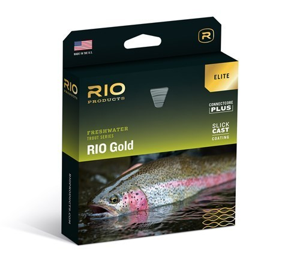
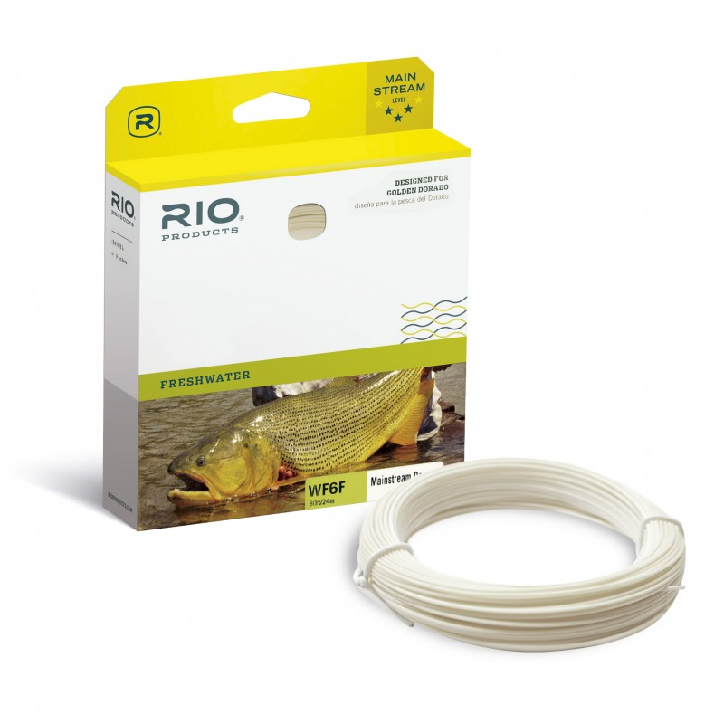
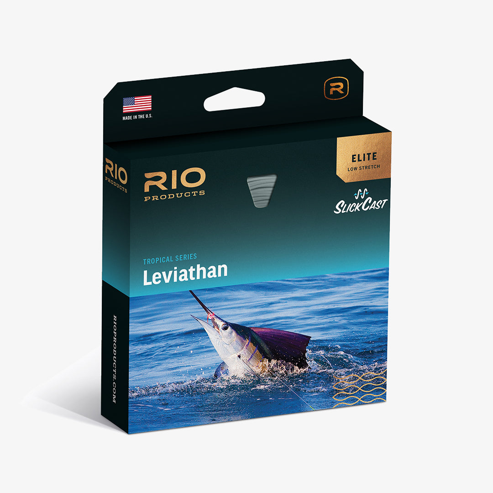

Lines para pesca fina
Lineas con las que podras tener muchas divercion capturando peces selectivos, en hambientes reducidos, como los rios de la cordillera de Los Andes.

Lineas todo terreno
Lineas que te permiten capturar peces de mediano a gran porte. Podras cubrir las necesidades de pescar truchas en la Patagonia y dorados en los Esteros del Ibera.

Lineas para pesca pesada
Lineas de pesca para peces de un porte extraordinario, como pueden ser grandes bagres y pesca en el mar.